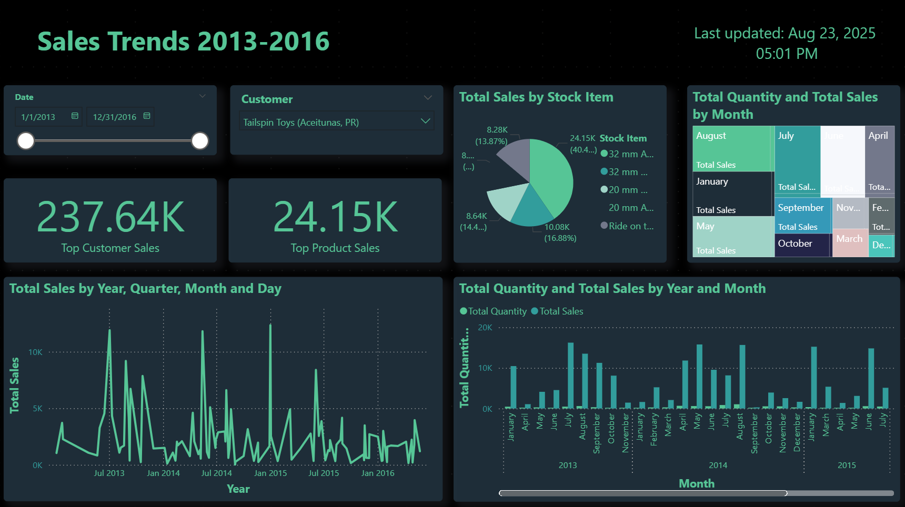

WideWorldImporters — Continued
Dimensional model • segments • comparisons

Download PBIX
Build notes
- Model: WideWorldImportersDW (
Fact.Sale, Fact.Stock Holding, Dimension.Date, Customer, Stock Item).
- Measures used:
Total Sales, Total Quantity, YoY Sales %, comparisons (e.g., Avg/Max across items).
- Visuals on “Inventory” page: segment donut, Top‑N bar, stacked/clustered columns, trend comparison line, matrix heatmap.
- Notes: relationships set to single‑direction to avoid ambiguous paths; static image used to avoid live auth issues.